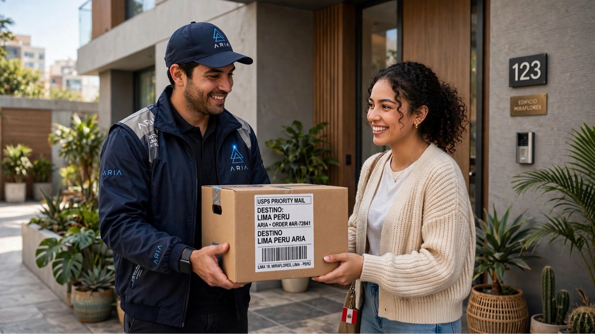

Compramos por ti
Compramos por ti en tus tiendas favoritas de EE. UU. — Target, Walmart, Old Navy, Foot Locker y AutoZone — y seguimos sumando más.
ARIA te lo trae.
Busca cualquier producto, comparamos precio, envío y aranceles en varias tiendas de EE. UU., y te mostramos un solo total ya puesto en tu puerta.
Todo lo que necesitas para comprar en Estados Unidos, en un solo lugar, sin sorpresas.
Accede a marcas y modelos que nunca llegan a las tiendas peruanas.
Vemos el precio del mismo producto en distintas tiendas de EE. UU. y te mostramos la mejor opción real, con envío y aranceles incluidos.
Black Friday, Cyber Monday y otras rebajas de temporada, directo desde Perú, sin depender de que alguien te las traiga.
Envío y aranceles ya calculados desde el inicio. Lo que ves es lo que pagas al recibir tu pedido.
Estimamos impuestos y flete antes de comprar. Si al final salen menos de lo estimado, la diferencia vuelve a tu cuenta como saldo Aria para tu próxima compra. Y si salen más, la diferencia la pagamos nosotros. Nunca nos quedamos con de más.
Desde que compramos en EE. UU. hasta que llega a tu puerta en Perú, siempre sabes en qué paso está tu pedido.
Encuentra cualquier producto de tus tiendas favoritas en EE. UU.
Te mostramos el mejor precio total, con todo lo que cuesta llegar a Perú incluido.
![Envío internacional a Perú]()
Nos encargamos de la compra, la aduana y el envío hasta tu puerta.
Inventario real de nuestras tiendas en EE. UU., en un solo feed por categoría.
Importar desde Estados Unidos suele terminar en una sorpresa: un cobro que nadie te avisó. Aquí no. Te decimos el precio completo desde el primer momento y lo sostenemos hasta tu puerta.
Todo se paga aquí. Nada se paga al recibir.
![]()
![]()
![]()

![]()
Comparamos precios reales entre varias tiendas de EE. UU. en vivo para encontrarte la mejor opción.
El flete se calcula sobre el peso estimado de tu pedido. El monto exacto se confirma en el checkout.
¿No encuentras lo que buscas? Escríbelo — lo rastreamos en vivo en EE. UU.
Todas las categorías disponibles, con inventario real de nuestras tiendas. ¿Buscas una marca? Está dentro de cada tienda, en “Busca por marca”.
Aria compra por ti en tiendas de Estados Unidos, consolida tu pedido en nuestro almacén de Miami, y te lo entrega en Perú con un solo precio total, sin sorpresas en la puerta.
Los casilleros tradicionales cobran por peso y no muestran el costo final hasta que tu paquete ya está en camino. Aria te muestra el total exacto antes de pagar, y compra por ti para que no necesites una tarjeta internacional ni lidiar con la tienda directamente.
Nunca a través de un revendedor externo. Cada producto dice de qué tienda viene, y te llega con un solo precio total: producto, flete y aranceles, calculados antes de pagar.
Las que ya tienen catálogo cargado se abren aquí mismo. Las que estamos conectando lo dicen — preferimos un "próximamente" honesto a un logo que no lleva a ningún lado.
Compramos en el catálogo de la tienda, no a un revendedor. Lo que llega es lo que ellos venden.
Partimos del precio real de su web. Nuestro margen va aparte y a la vista, no escondido en el producto.
Una compra en la tienda oficial tiene garantía y política de devolución reales detrás.
Sí. Busca el producto y, si no aparece, usa "Buscar más en [Tienda]" — vamos al catálogo real de esa tienda en ese momento y te lo traemos con precio puerta a puerta.
Porque todavía estamos conectando su catálogo. Compramos ahí por encargo mientras tanto: escríbenos con el producto y lo cotizamos.
El precio del producto sí. El flete y los aranceles se calculan en el checkout con el peso real de tu pedido, y ahí ves el total exacto antes de pagar — nada aparece después.
Elige tu vehículo y busca la pieza que necesitas — comparamos precios en tiendas de repuestos de EE. UU. en tiempo real.
Comprar en Estados Unidos debería sentirse tan fácil y transparente como comprar en tu tienda local.
Nació como una promesa: que ningún peruano vuelva a pagar de más — ni a depender de favores, viajeros o casilleros opacos — por acceder a lo mismo que cualquiera compra en una tienda en Estados Unidos.
Empezamos como un proyecto pequeño, construido a mano, con obsesión por una sola cosa:
que el precio que ves sea el precio que pagas.
Sin sorpresas en la aduana. Sin cobros que aparecen al final. Sin letra pequeña.
Compramos directamente en las tiendas oficiales, consolidamos en Miami y gestionamos todo el envío y la aduana hasta tu puerta en Perú. Cada producto muestra claramente de qué tienda proviene — nunca trabajamos con revendedores externos.

Creemos algo simple: el valor de una persona no está en lo que tiene, sino en lo que construye — para sí misma y para los demás.
Es para ella. Para que crezca en un mundo donde la honestidad sea la regla y no la excepción. Donde nadie pague de más por no tener a alguien allá. Donde el precio que ves sea el precio que pagas, y donde el que se equivoca asuma su error en lugar de pasárselo al cliente.
No nos hacemos ricos con tu confusión.
Ganamos de una sola manera, a la vista de todos: un margen claro por hacer el trabajo. Y si nos equivocamos, perdemos nosotros.
Eso defendemos. Eso es Aria.
Compramos por ti en tus tiendas favoritas de EE. UU. — Target, Walmart, Old Navy, Foot Locker y AutoZone — y seguimos sumando más.
Juntamos tus pedidos en nuestro almacén para que pagues un solo envío.
Gestionamos aduana y entrega en Perú. Todo pagado desde el checkout: nada que pagar al recibir.
Si nuestro estimado se queda corto, asumimos la diferencia. El precio que te cotizamos es el que pagas.
Te lo decimos de frente: devolver un producto a Estados Unidos es caro y lento. Así lo manejamos.
Dentro de 7 días de recibido, desde tu cuenta Aria, con fotos del producto y del empaque.
Verificamos la política de la tienda de origen — ojo, sus plazos cuentan desde la compra, no desde que lo recibiste en Perú.
Lo entregas en nuestro punto de recojo en Lima, nosotros lo consolidamos y lo enviamos a Miami. No lo envíes por tu cuenta — te saldría más caro que el producto.
Como la compra la hicimos nosotros, la devolución la gestionamos nosotros.
Una vez que Miami recibe el producto y la tienda aprueba la devolución, a tu método de pago original o como saldo Aria — tú eliges.
Producto equivocado o llegó dañado: todo corre por nuestra cuenta. Retorno gratis y reembolso completo, incluido el envío original.
Puedes devolverlo, pero el retorno a Miami corre por tu cuenta — te cotizamos el costo real antes de que decidas. El reembolso cubre solo el producto, no el envío original.
Lo resolvemos en Miami directamente con la tienda, sin costo para ti.
Así funciona el servicio, en términos simples. Los términos legales formales se completarán junto con el registro de la entidad — mientras tanto, esto es exactamente lo que hacemos y lo que puedes esperar.
Aria compara precios en vivo en tiendas oficiales de Estados Unidos y compra directamente en tu nombre — nunca a través de un revendedor externo. Consolidamos tu pedido en nuestro almacén de Miami y lo entregamos en Perú.
El precio que ves incluye el costo del producto más nuestro margen de servicio, mostrado en soles usando el tipo de cambio real del día (fuente: SUNAT). El envío y, si corresponde, los aranceles e impuestos de aduana de Perú se calculan y se muestran antes de pagar, nunca después.
Nuestra política completa de devoluciones — plazos, quién cubre el costo del retorno según el caso, y cómo se procesa tu reembolso — está en la página Devoluciones.
Entidad legal en trámite de registro — RUC y datos legales completos próximamente. Estos términos se actualizarán con el detalle formal correspondiente una vez completado el registro.
¿Preguntas sobre estos términos? Escríbenos a contacto@ariashop.pe o .
Control de lanzamiento, pedidos de prueba y la cuenta real de cada envío.
Se muestra al cliente cuando su pedido queda en espera.
La caché se actualiza sola cada 4 horas. Usa esto solo si necesitas verla actualizada ahora mismo.
Couriers, cola de envíos y margen real. El cliente nunca ve el courier ni el costo interno.
Ingresa tu correo y contraseña.
¿No tienes cuenta?